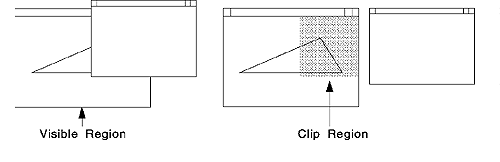

Clipping is the process an application uses to limit graphics output to a specific area (called the clipping area) of the display or page.
There are several clipping functions provided by the PM. However, if your application requires a clipping boundary in device coordinates, it must define the boundary with a region. To convert the region into a clipping boundary, call GpiSetClipRegion. The clip region, as defined by this operation, becomes the current clip region of all subsequent drawing operations.
GpiSetClipRegion accepts, as input, the region handle. A NULL region handle sets the clip region to infinity, effectively performing no clipping.
Unlike clip paths, the region that is no longer the current clip region is not deleted. It retains the effects of any changes made to it while it was a clip region, and it can be used with the other region functions, including being reselected as the clip region with GpiSetClipRegion.
You do not have to deselect the current clip region before selecting another. Each selected clip region automatically replaces the one before it. If there is an existing clip region when you call GpiSetClipRegion, it reverts to a normal region, and its handle is returned.
When you have selected the current clip region, none of the region functions described thus far can be used for that region. The following functions can be used with the current clip region:
These functions are described in Clipping and Boundary Determination. All of these functions work in world coordinates, rather than device coordinates, and therefore, are subject to current transformations.
GpiPtVisible and GpiRectVisible do not apply exclusively to clip regions.
When the screen contents are altered (for example, when a window is sized), you have to be able to repair the part of the screen image affected by the change. The following figure illustrates the necessary region.
Repairing the Screen with Clip Regions
To improve performance of the drawing operation, you can restrict the redrawing and repair work to the affected parts of the screen.
Use WinQueryUpdateRegion to determine whether graphics objects are totally outside the update region and need not be drawn at all. Graphics objects that are within, or are partly outside, the update region should be drawn, and the system will perform the required clipping automatically.
Define a clipping region using the dimensions of the update region. Then call an appropriate GPI drawing request, such as GpiDrawChain, to redraw the screen contents. Any drawing that would occur outside the clip region is discarded according to the standard clipping rules. Only those graphics within the clip region are redrawn.